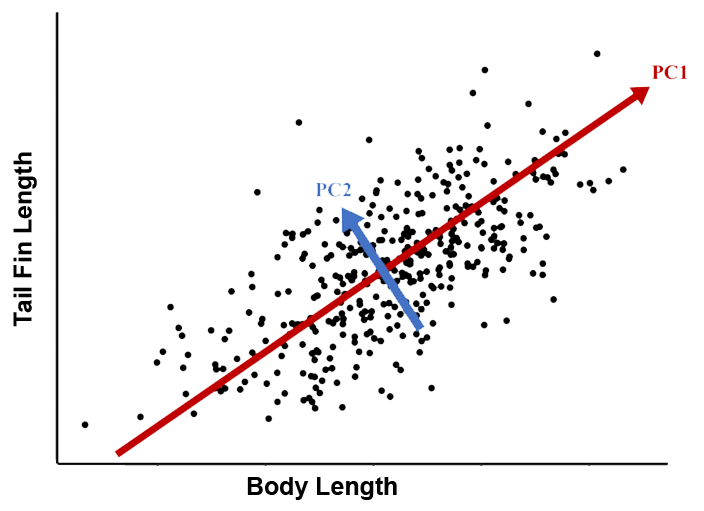

In this chapter, we add a few more tools to your R coding toolkit. This may be your first exposure to multivariate methods, but they are widely used in the analysis of biological data. Some populat examples include community composition data (e.g., plants, animals, microbes), environmental characteristics (e.g., temperature, precipitation, salinity), phenotypes (e.g., height, weight, age), cell and molecular characteristics (e.g., transcriptome, proteome, metabolome). Biologically, these are very different datasets. However, from the R programming perspective they are all very similar because they can be represented by a two-dimensional matrix of rows and columns. These are examples of asymmetric matrices because the rows and columns are different.
Asymmetric matrices are more typical of raw biological data, but they can also be used to calculate symmetric matrices in which rows and columns are the same. These matrices are symmetric because the same values are mirrored above and below the diagonal. Some popular symmetric matrices in biology are variance-covariance matrices, correlation matrices, distance (or dissimilarity) matrices, and similarity matrices. If you find this explanation hard to follow, don’t worry, we’ll cover an example in the next section and in future books including the R STATS Crash Course and the R Machine Learning Crash Course.
Multivariate analyses are very useful for comparing samples and characteristics. For example, if we want to compare our samples to see which are similar to each other, then we set up a data frame with each row as a different sample and each column as a characteristic of the sample.
Matrix Examples
We will start with an example to illustrate the difference between symmetric and asymmetric matrices, and how they may be related. Imagine you have four samples and three characteristics. Choose your favourite biological example to motivate your understanding here – samples could be four individuals or tissues or habitats, and characteristics could be expression of three genes or three phenotypic measurements, or the abundances of three plants (or microbes).
This is an asymmetric matrix because the rows and columns are different. Each row is a unique sample and each column is a unique characteristic of the sample.
From these data, we can calculate the variance of each characteristic across the four samples. For example, we can calculate the variance for the first characteristic as:
var(AsymDat$Char1)
[1] 3.583333
We can also calculate the covariance between any pair of samples
cov(AsymDat$Char1,AsymDat$Char2)
[1] 6.666667
We can continue to calculate the variance for each characteristic and the covariance between each pair of characteristics to create a new matrix.
Symmetric Matrix
A matrix is symmetric if its values are mirrored above and below the diagonal. Following along with the above example, we can create a new matrix called the variance-covariance matrix:
Compare these values with the individual examples above. The diagonal values are the variances of the characteristics (3.58 for Char1, 12.67 for Char2, and 35.33 for Char3). The off-diagonals are the covariances between each pair of characteristics (e.g., 6.67 for the covariance between Char1 and Char2). The matrix is symmetric because the values are mirrored along the diagonal. That is, the covariance between row 1 (Char1) and column 2 (Char2) is the same as the covariance between row 2 (Char2) and column 1 (Char1).
There are many other types of matrices, but once you realize that they are just representations of data, it helps to demystify more complex analyses. Matrices also have mathematical operations but these can be a bit counter-intuitive because there can be many ways to apply equations to two sets of numbers.
Matrix Algebra
R is pretty handy for matrix calculations that would be very time-consuming to do by hand or even in a spreadsheet program.
As an example, let’s create some numeric vectors that we can play with. First, a simple vector object called X containing the numbers 1 through 10.
X<-c(1:10)X
[1] 1 2 3 4 5 6 7 8 9 10
Second, a vector called Y containing the numbers 0.5 to 5 in 0.5 increments. Note how we can do this using some simple math:
Y<-c((1:10)*0.5)Y
[1] 0.5 1.0 1.5 2.0 2.5 3.0 3.5 4.0 4.5 5.0
Note the extra brackets (1:10) to help us understand that each number in the vector 1 through 10 is multiplied by 0.5, not just the last number.
Basic Operations
Probably the most common calculation for these X and Y objects is just to cycle through each element of each vector and multiply them together. For example, if X is a vector of leaf length measurements and Y is a vector of leaf width measurements, then we might want to estimate leaf area by multiplying each length by its corresponding width.
In R we just use the standard multiplication operator * on a vector, just like we would do for two individual numbers.
X * Y
[1] 0.5 2.0 4.5 8.0 12.5 18.0 24.5 32.0 40.5 50.0
Addition, subtraction, division, and exponents are similar.
Just as we apply operators to vectors, we can also apply functions to vectors. When we do this, the same function is applied to each individual cell of the vector.
Vectors, matrices, and higher-order arrays have multiple elements. Because of this, there are more than one ways to multiply the elements in one object with the elements in the other. This may seem a bit abstract but matrix multiplication has broad applications in biology, from gene expression and molecular biology to community ecology and image analysis.
There are more options than simply multiplying each corresponding element. For example, we can multiply each element in the vector X by each element in the vector Y. This will create a matrix. Let’s make an example with the first 4 elements of X and the first 3 elements of Y.
Outer Product
In the outer product we work across columns of the first object, multiplying by rows of the second object. It’s easier to understand by example:
Note how the first column is each value of X (1-4) multiplied by the first value of Y (0.5), and the second column is multiplied by the second value of Y (1). Similarly, the first row is each value of Y multiplied by the first value of X (1), etc. What happens if we reverse the order?
To multiply two vectors together with the outer product, we arrange the first vector as rows, and the second vector as columns, and then multiply each pair of values together to fill in the matrix.
We can extend this to multiply two objects that are 2-dimensional matrices instead of 1-dimensional vectors. However, this gets tricky for the outer product because instead of generating a 2-D matrix from two 1-D vectors, we will generate a 4-D array from the outer product of two 2-D matrices.
Dot Product
Another way to multiply two vectors is with the dot product. To do this, we match the element of each row in the first object with each column in the second object, and sum them together: (e.g. X[1]*Y[1]+X[2]*Y[2]...).
It’s easy to extend from two vectors to two matrices, just by multiplying out elements in each row of the first object by elements in the second object.
X %*% Y
[,1]
[1,] 192.5
sum(X*Y) == X %*% Y
[,1]
[1,] TRUE
Other Operations
There are a few other important matrix operations that are useful for biological data and modelling/simulations. The cross-product is a complicated formula that is easy to calculate in R
We can also use the diag() function on an existing matrix, to pull out all of the values on the diagonal, resulting in a vector
diag(Z) # Diagonal elements of Z
[1] 0.5 2.0 4.5
Some of these calculations can get a bit tricky – especially when we move to 2D matrices instead of vectors. You’ll want to consult or review a matrix algebra textbook if you are going to apply these, but that’s getting too advanced for this book. For now, the important thing is just to know that these options are available if you need them in the future.
Matrix Math Summary
Operator
Name
*
Multiply elements
%*%
Dot Product
%o%
Outer product
t()
Transpose
crossprod()
Cross-product
diag(4)
Identity of 4x4 matrix
diag(M)
Diagonal elements of matrix M
PCA
One popular use-case for matrix calculation is the principal components analysis (PCA). The PCA is covered in much more detail in the PCA Chapter in the book R STATS Crash Course for Biologists.
Briefly, PCA is a form of unsupervised machine learning. It uses matrix math to re-scale a bunch of correlated vectors (e.g. measurements) so that they can be mapped to an equal number of independent PC axes. For example, if you measure tail fin lengths and body lengths of 100 fish, then you can code the data as two vectors. These values will probably be correlated with bigger fish having bigger tails. We can re-scale these two dependent (i.e. correlated) vectors as two independent (i.e. uncorrelated) principal components.

PCA of fish size
In the example shown in the figure, PC1 is a measure of fish AND tail size, whereas PC2 is a measure of tail fin size relative to body size.
PCA and similar ordination methods are widely used in biology, from community ecology and microbiome studies to morphometrics, population genetics, metagenomics and gene expression. Of course there are many applications outside of biology too! For now, just know that it is easy to run a PCA using the princomp() function. In most cases, we would want to scale the vectors to have a mean of 0 and standard deviation of 1. Equivalently, we can use the cor=T parameter to use the correlation matrix in the calculations.
princomp(Z, cor=T)
Call:
princomp(x = Z, cor = T)
Standard deviations:
Comp.1 Comp.2 Comp.3
1.732051e+00 4.214685e-08 0.000000e+00
3 variables and 4 observations.
List Output
Pro-tip: Many analysis functions in R output as lists, including some very useful functions like lm() for linear models, which are covered in the R STATS Crash Course for Biologists.
For example, a princomp output list contains several useful objects.
princomp(Z)
Call:
princomp(x = Z)
Standard deviations:
Comp.1 Comp.2 Comp.3
2.091650e+00 2.980232e-08 0.000000e+00
3 variables and 4 observations.
Look at the help ?princomp and scroll down to the Value subheading. Note how the subheadings correspond to names(princomp(z))? These values are stored as a list object with each element corresponding to a part of the list object denoted by $.